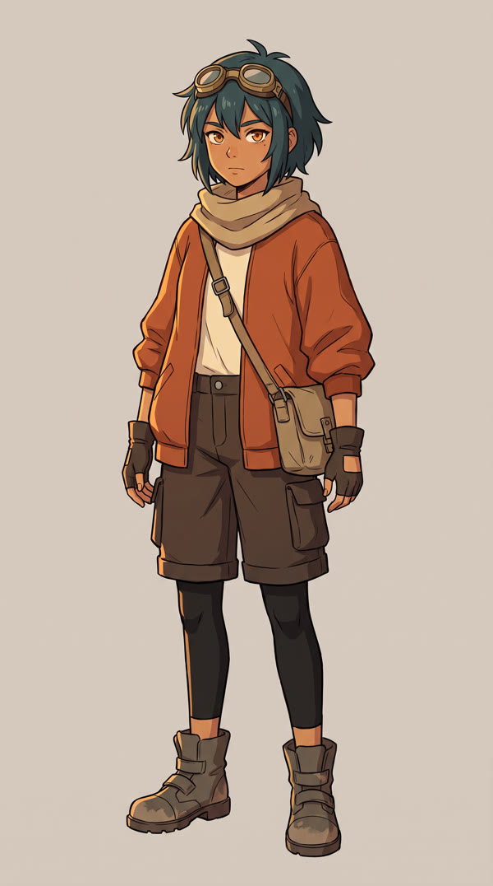
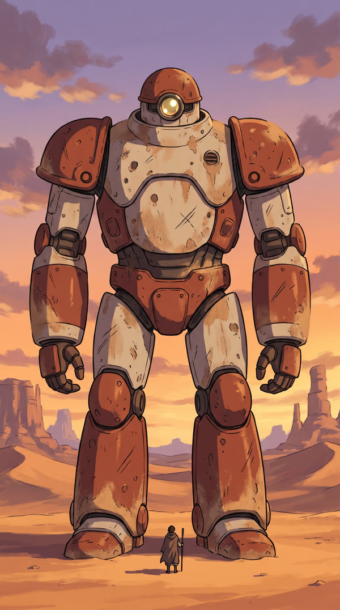
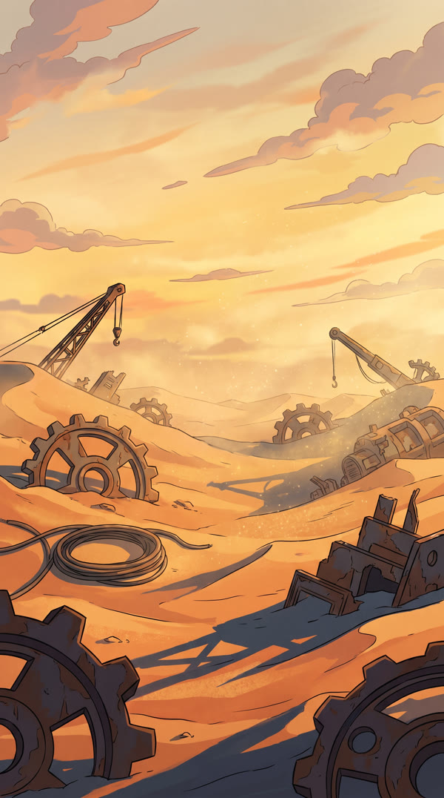
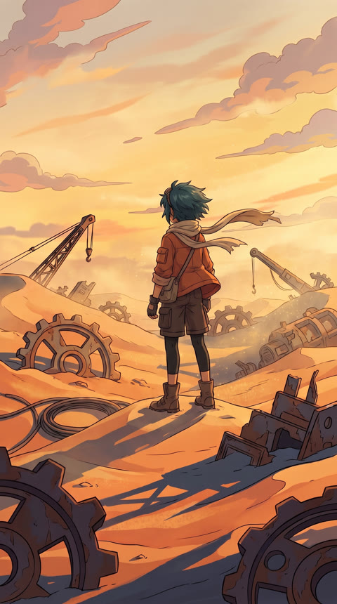
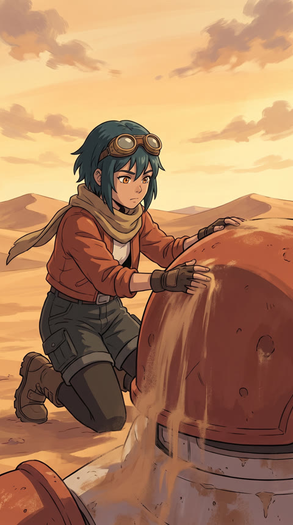
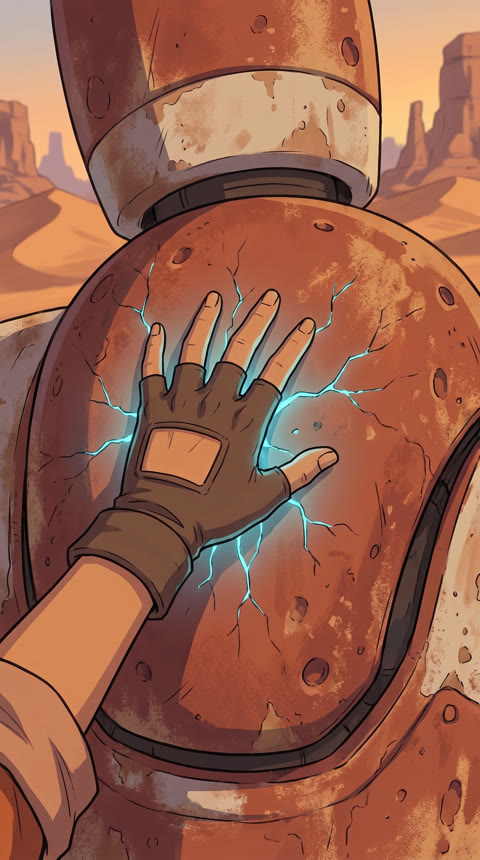
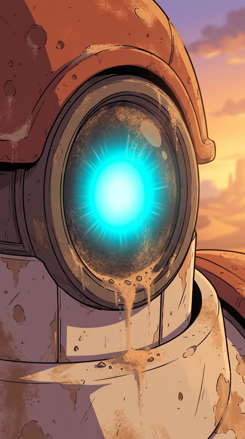
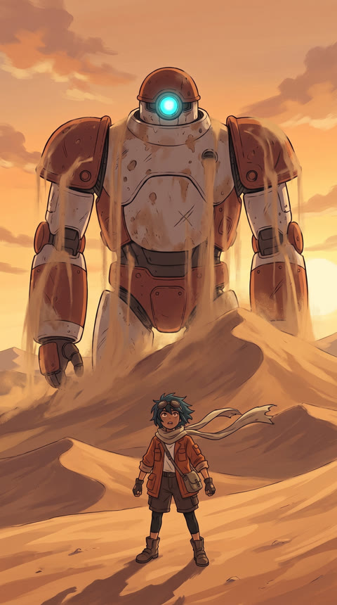

Rust Titan
An experimental anime cinematic.
In a desert of buried machines, a young explorer named Sola brushes the sand from a strange rusted dome. Under her hand, something sparks. Something ancient opens its eye, and a giant rises from the dunes.
- Written & directed
- Rishi Patlolla
- Format
- Vertical short film · 1080×1920 · 24 fps
- Style
- Anime-inspired science fiction
- Design & keyframes
- Nano Banana Pro, from a locked character and world bible
- Motion
- Runway multi-shot and Kling 4 via the Runway API
- Orchestration
- Claude and GitHub Actions
- Edit & finishing
- FFmpeg assembly, DaVinci Resolve finishing
- Music & sound
- Selected, edited and mixed by hand
Five beats, one discovery


Locked before a single frame moves
Sola, the Titan and the desert were designed and frozen as references first. Every keyframe is generated against them, so the characters stay on-model shot to shot.



Approved keyframes





What the machine gave us,
and what we kept.
- Cut the opening walkSola walked straight through a metal bolt. It failed our physical-plausibility check, so the film now opens on the world instead.
- Removed a mid-shot model switchAn earlier version handed off between two models halfway through the rise, and you could see it. New rule: models only change at a cut.
- Anchored the rise with an end frameWithout one, the Titan drifted into a different robot by the end of the shot. With a locked final frame, it stays itself.
- Swapped an off-model shotOne generation lost Sola's goggles. It was replaced, not hidden.
- Built the ending by handThe Titan fades while its eye keeps glowing, then the studio card. Composited deterministically, not generated.
- Music and sound, by a humanPicture is locked first; then music, desert ambience and metal are cut to the beats and mixed to streaming loudness.
How Rust Titan was made
Idea & shot list
A five-beat story: world, find, contact, eye, rise. Each shot gets framing, angle and movement.
Rishi · ClaudeDesign bible
Sola, the Titan and the desert designed, compared across models, then locked.
Nano Banana ProModel shoot-out
The same shots run through five video models. Kling 4 held the designs best.
Runway API · GitHub ActionsEdit & finish
Best takes cut together, ending composited, music and sound added, export checked.
FFmpeg · DaVinci Resolve